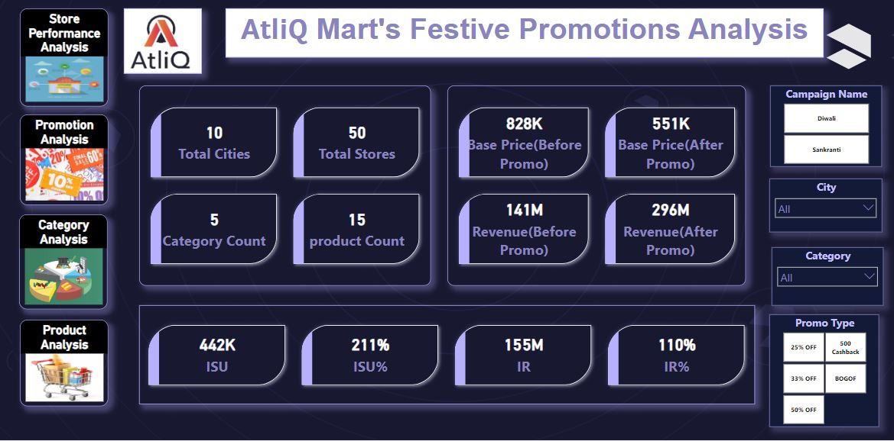
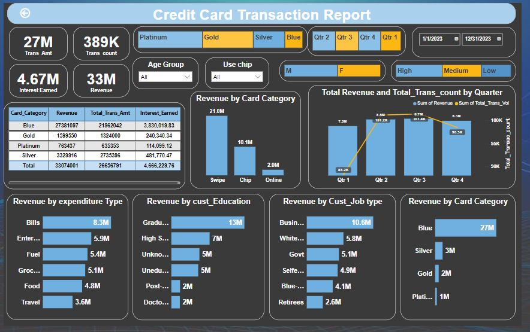
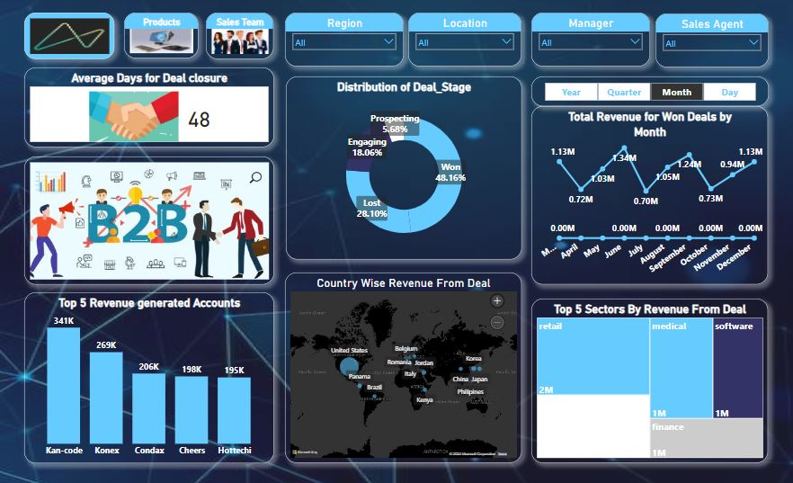
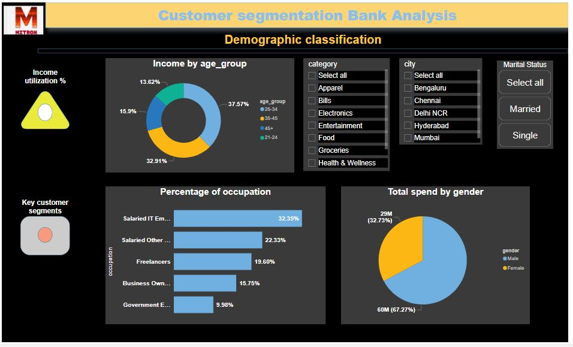
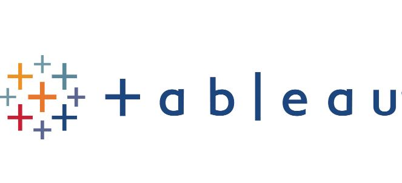
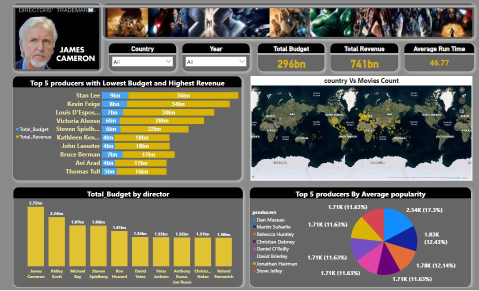
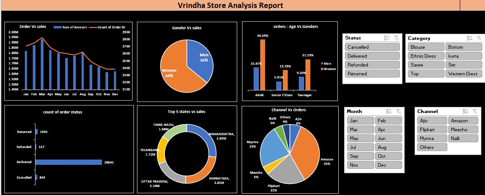

AtliQ Mart is a retail giant with over 50 supermarkets in the southern region of India. All their 50 stores ran a massive promotion during the Diwali 2023 and Sankranti 2024 (festive time in India) on their AtliQ branded products. Now the sales director wants to understand which promotions did well and which did not so that they can make informed decisions for their next promotional period.


The Credit Card Transaction Report provides an analysis of credit card transactions and revenues segmented by various factors. It includes data on total revenue and transaction counts by quarter, expenditure types, customer education levels, job types, and card categories. Additionally, the report examines revenue distribution by states, salary groups, marital status, and dependent count,offering detailed insights into credit card usage patterns and financial outcomes.

The Maven Sales Analysis focused on analyzing CRM data for MavenTech. As a data analyst, I used PowerBI to clean, format, and manipulate sales data. The project aimed to provide insights into sales performance across various regions, sales managers, and agents, organized in a hierarchical structure. Key deliverables included interactive dashboards, detailed reports, and compelling data visualizations. The analysis aimed to enhance understanding of sales performance and inform strategic decisions.

The YouTube Songs Analysis project, conducted during an internship, aims to explore YouTube songs data using Power BI. By examining key attributes like views, likes, comments, video duration, and quality from 2010 to 2023, the project seeks to uncover trends and patterns in song performance and user engagement. Key insights include viewership and engagement metrics, the impact of video quality and captions, and optimal publication times. This analysis will aid content creators and stakeholders in optimizing their YouTube song content for better performance and audience reach.

Mitron Bank, plans to launch new credit cards to expand its market. As a data analyst I was tasked to analyze a sample dataset of 4000 customers across five cities. am responsible to generate metrics, design a self-explanatory dashboard, and present key insights to Mitron Bank's strategy team. The analysis aims to tailor the credit cards to customer needs and secure the full project.

The project got data from survey where 10,000 respondents across 10 cities to uncover potential insights aimed at amplifying brand recognition and capturing market share. Analyzing the data, we discovered that around 80% of consumption is by individuals aged 19-45, with 55% within the 19-30 age group. Our interactive dashboard highlighted that online ads (40.20%) are the most effective marketing channel to reach these customers. This project provides a comprehensive understanding of the target audience and optimal marketing strategies.
.jpg)
In this project, I used Kaggle's API to download a retail sales order dataset and utilized Python with Pandas for data processing and cleaning. Key steps included handling null values, deriving new columns like discount and profit, removing unnecessary columns, and converting data types. After processing, the cleaned data was loaded into MySQL Workbench for analysis. The analysis answered critical business questions such as identifying the top 10 highest revenue-generating products, top-selling products by region, month-over-month sales growth for 2022 and 2023, the best sales month for each category, and the sub-category with the highest profit growth in 2023 compared to 2022.

AtliQ Grands, a fictional hospitality powerhouse, embarked on a strategic data-driven analysis to address market dynamics and drive business expansion across four cities. The project involved meticulous data cleaning to rectify negative values and eliminate outliers, followed by transforming raw data into actionable insights. Key findings include the high occupancy rate of presidential rooms, Delhi's leading occupancy rate, and Mumbai's top revenue generation. Additionally, insights into service quality and booking patterns were analyzed to inform strategic decisions and enhance business performance.

The Onyx Movie dataset details key metrics and insights from the movie industry. It includes total revenue and budget figures, with 2017 highlighted as the highest revenue year at 34 billion. The report features top producers like Stan Lee and their financial impacts, as well as the number of movies released by genre, with Drama being the most prevalent in 2023. Additionally, it provides budget and revenue data for major films like "Avatar" and "Avengers: Endgame".

The Vrinda Store Sales Analysis project involved examining raw sales data using Microsoft Excel to uncover key insights and optimize sales strategies. Key findings revealed that women (65%) and the adult age group (21-49 years) are the primary customers, with Maharashtra, Karnataka, and Uttar Pradesh leading in sales contributions. Major sales channels include Amazon, Flipkart, and Myntra. The final recommendation is to target women aged 30-49 in these top states through strategic ads and offers on the major sales platforms. This project utilized data cleaning, processing, and dashboard-building skills to deliver actionable insights.

This project involves a comprehensive analysis of car sales data, focusing on various key metrics and insights. We aim to identify details of cars purchased in 2022, analyze the total number of cars sold and revenue generated by each salesperson, and examine car sales by type and year. Special attention is given to specific salespersons like Emily Wong and the performance of hatchback and SUV car sales. The project also highlights the top-performing salespersons by car sales and revenue across different years, providing valuable insights for strategic decision-making.